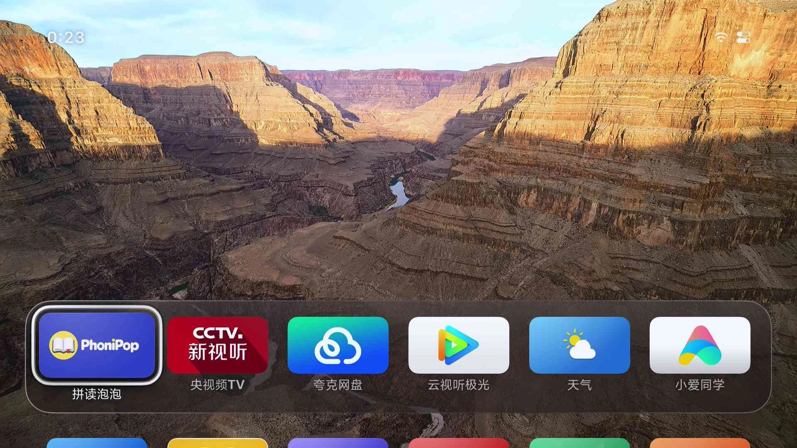
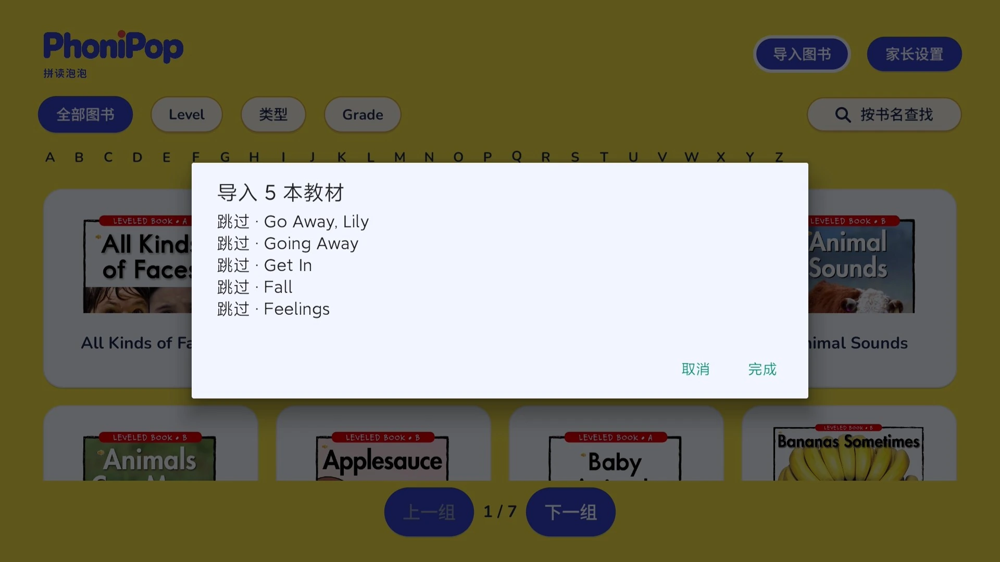

翻一頁，
聽一句
插畫和句子並排顯示在電視上。讀到一半先離開，下次打開就能接著讀。
- 左 右
- 翻到上一頁或下一頁
- 確認
- 播放或暫停這一頁的朗讀
- 返回
- 回到書架

安裝到電視
準備一台 Android TV 或 Android 電視盒。可以用 USB 隨身碟自行安裝，也可以請電腦上的 AI 助手幫忙。
- 系統需求
- Android 6.0 以上
- 已測試機型
- 小米電視 MiTV-AETP0（Android 9）
內建六本 Level A 有聲繪本，皆附原版朗讀。可用 B、G、I、M、S、U 找書名。


打算用 USB 隨身碟安裝？直接跳到第 3 步。
1. 開啟電視的 ADB 偵錯
先把電腦和電視連到同一個家用網路，再用遙控器打開電視設定，依品牌找到偵錯選項。
小米電視
到「設定 → 關於」，選取「產品型號」，連按確認鍵直到出現開發者模式提示。回到設定，在「帳號與安全性」開啟「ADB 偵錯」。
TCL
到「設定 → 關於 → 本機資訊」，快速按遙控器的上、下、左、右鍵。下方出現「更多」後，進去開啟「ADB」。
海爾
按下電視機身的訊號來源鍵，選單出現後，用遙控器依序按左、左、上、右。在工廠菜單開啟「ADB 偵錯」後離開。
OPPO
前往「設定 → 系統 → 關於本機」，選取「裝置型號」，依序按上、上、右、右，再按確認。接著到「系統 → 開發人員選項」，開啟「USB 偵錯」或「ADB 偵錯」。
其他 Android TV 或電視盒
在「設定」開啟「系統」或「裝置偏好設定」，再進入「關於」。選取「組建編號」或「Android TV 作業系統組建」，連按確認鍵約七次。回上一層，從「開發人員選項」找「網路偵錯」「無線偵錯」或「USB 偵錯」。
電視若只有「無線偵錯」，請先開啟。助手請你配對時，選「使用配對碼配對裝置」，把畫面上的位址、連接埠及配對碼告訴它。配對後回到無線偵錯主畫面，再提供那裡顯示的連線位址及連接埠。
選單名稱會隨機型及系統版本而異。找不到偵錯選項時，可以試第 3 步的 USB 安裝方式。
2. 找到並填入電視的 IP 位址
在電視上前往「設定 → 網路」，開啟目前使用的 Wi-Fi 或有線網路詳細資料，找到「IP 位址」。部分 OPPO 電視會把位址放在頁面底部。在這裡填入位址，下方的安裝提示詞就會自動帶入。
3. 選擇安裝方式
- 複製下方的提示詞，貼給能在電腦上執行指令的助手。它會下載並驗證安裝檔。
- 電視跳出偵錯授權或安裝確認時，用遙控器確認。
- 將官方 APK 安裝檔複製到 USB 隨身碟，再把隨身碟插入電視。
- 用電視的檔案管理員找到 APK，開啟後依畫面指示安裝。
- 回到電視的應用程式清單，開啟 PhoniPop。
電視若阻擋安裝，請依系統提示查看檔案管理員的「安裝未知應用程式」權限。各機型的設定位置可能不同。
製作自己的繪本
把自己做的、或已獲授權使用的英文繪本交給電腦上的 AI 助手。先試做一本，完成後就能把 ZIP 匯入電視一起讀。

- 整理素材。把一本繪本的 PDF 或 PPTX 放進同一個資料夾。如果有配套錄音，也一起放進去，並用頁碼命名。
- 把資料夾和下方的提示詞交給電腦上的 AI 助手。助手需要能讀取本機檔案並執行 Python。已下載工具包的話，可以一併附上。
- 試讀一次。按助手列出的頁碼，核對插畫、句子和朗讀。確認後，依照下一節的匯入步驟把 ZIP 加到電視。
請選擇能在這台電腦上執行指令的助手，例如：
 WorkBuddy
WorkBuddy 豆包電腦版
豆包電腦版 千問電腦版
千問電腦版 Trae
Trae- Claude Code
 Codex
Codex
把繪本加進書架
第一次匯入繪本，可以先下載下方的範例。保留 ZIP 壓縮檔，直接在拼讀泡泡裡開啟。
- 先把 ZIP 傳到電視。可以把繪本 ZIP 複製到 USB 隨身碟，再插入電視。若電腦上的 AI 助手已連上電視，也可以請它把 ZIP 傳到電視的 Download 資料夾，並告訴你檔名。
- 在書架選「匯入繪本」（畫面顯示「导入图书」）。用遙控器選「U 盘 / 本地文件」。若使用 USB，就開啟隨身碟；若由助手傳送，就到電視的內部儲存空間找 Download 資料夾。第一次使用時，依畫面提示允許讀取檔案，也可以返回選「系统文件选择」。
- 選取繪本 ZIP，按「添加」。核對清單中要新增或更新的書名，再按「添加」。如果每本都顯示「跳过」，代表書架上已有相同或較新的版本，按「完成」即可。匯入完成後就能拔掉隨身碟。



安裝之後
匯入後還需要連網嗎？
可以離線閱讀。匯入後，繪本會儲存在電視裡，閱讀及播放隨書朗讀都不需要連網。
為甚麼這本繪本沒有聲音？
朗讀音檔是隨書附上的。有些繪本只有插畫和文字，一樣可以翻頁閱讀。這裡的《三隻小豬》有逐頁朗讀，打開後按遙控器的確認鍵就能試聽。
更新 App 後，已匯入的繪本會怎樣？
使用同一來源的新版 APK 直接更新，就能保留已匯入的繪本和閱讀進度。原本的繪本 ZIP 也請留作備份。